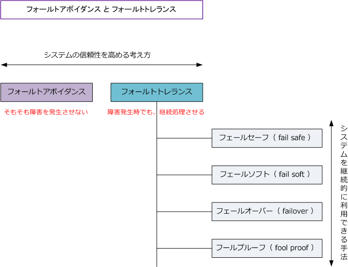
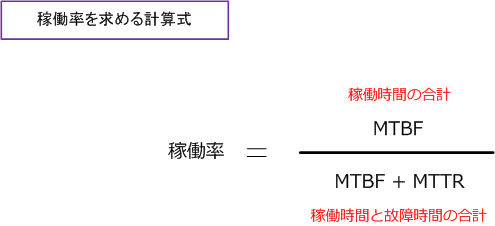

Fault Avoidance / Fault Tolerance
フォールトアボイダンスとは、フォールトトレランスとは
フォールトアボイダンス（Fault Avoidance）とは、システムの信頼性を高めて障害や故障を発生させない ようにする考え方のことです。フォールトトレランス（Fault Tolerance）とは、障害や故障が発生した時も 予備のシステムに切り替えるなどして、システムを正常に稼働させ続ける考え方または仕組みのことです。
フォールトトレランスの手法には、フェールセーフ、フェールソフト、フェールオーバー、フールプルーフ などがあります。これらの手法により障害発生時でも完全に機能を保った状態でシステムを継続処理させる ことができたり、機能の低下があるもののシステムの処理を続行させることができます。

| フォールトトレランス手法 | 説明 |
|---|---|
| フェールセーフ （ fail safe ） |
システムに障害や故障が発生すると、被害を最小限にして、安全側に倒すようにすること。 復旧不能な致命的ダメージを回避するためにシステムが安全に機能を停止することを意味する。 |
| フェールソフト （ fail soft ） |
システムに障害や故障が発生しても、故障個所だけを切り離し、システムを完全に停止させずに 機能を維持した状態で処理を続行させること。フェールセーフと違い停止せずに縮退運転させる。 |
| フェールオーバー （ faileover ） |
システムに障害や故障が発生しても、自動的に別システムや機器に切り替えて稼働を続けること。 フェールセーフの停止やフェールソフトの縮退運転と違い、完全に引き継いで処理を続行させる。 |
| フールプルーフ （ fool proof ） |
ユーザが間違った操作をしても、システム側で誤作動をしないような設計や構造にすること。 fool（愚か者）に proof（耐える）ように、そもそも誤操作させないように配慮する設計手法。 |
システムの信頼性を向上させるための考え方として、フォールトアボイダンスとフォールトトレランスを 解説しましたが、以下ではシステムの信頼性の評価基準であるRASISについて解説します。
RASIS（レイシス）とは
RASISとは、コンピュータシステムに関する以下の5つの指標の頭文字を並べたものです。これらの5つの 要素によりシステムの性能を計る概念のことです。元の概念となった先頭3つからなるRASは、米IBM社が メインフレーム製品の特性を表す用語として示され、後に「I」と「S」が追加されてRASISとなりました。
Reliability（信頼性） Availability（可用性） Serviceability（保守性） Integrity（完全性） Security（機密性）
| RASIS | 説明 |
|---|---|
| Reliability（信頼性） | 障害が発生しにくいこと、不具合による停止が発生しにくいことを示す指標 |
| Availability（可用性） | 高い稼働率を維持できることを示す指標 |
| Serviceability（保守性） | 障害発生時に迅速に復旧できることやメンテナンスのしやすさを示す指標 |
| Integrity（完全性） | データの消失や不整合を起こさずに一貫性を保っていることを示す指標 |
| Security（機密性） | 機密性が高く、外部からの攻撃（不正アクセスや改ざん）などがないことを示す指標 |
Reliability（信頼性）の評価指標としてMTBF（平均故障間隔）があげられます。Serviceability（保守性）の 評価指標としてはMTTR（平均修理時間）があげられます。
| 評価指標 | 説明 |
|---|---|
| MTBF （Mean Time Between Failures） |
MTBFは、システムが正常に安定稼働し続ける平均時間。平均してどのくらいの時間で 1回の故障が発生するかを示す。MTBFが長い場合、システムの信頼性が高いと言える。 |
| MTTR （Mean Time To Repair） |
MTTRは、システムを修理するのに必要な平均時間。MTTRが短い場合、システムは 短時間で修復できていることを示しているのでシステムの信頼性が高まることになる。 |
MTBFとMTTRの値から、以下の計算式でAvailability（可用性）の指標である稼働率を導くことができます。

なお、MTTRを短くしたい場合、つまりシステムを修理するのに必要な時間を短くしたい場合には例えば、 システムにエラーログ取得機能があれば、障害発生時の原因特定が早くなり短時間で修復可能となります。
また、システムの信頼性を向上させるという観点では、ステージング環境での最終的な動作確認を徹底する ことも重要です。ステージング環境とは、本運用システムとほぼ同じ構成のシステムを用意して、システム リリース前の最終テストを行う環境のことです。